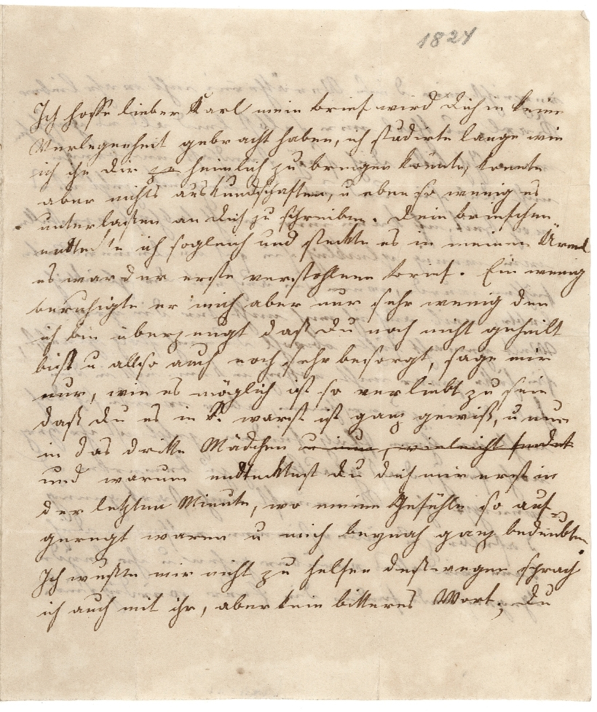

BayHStA, Deutscher Orden, Kommende Blumenthal Amtsbücher und Akten, 69, S. 545



Kommentar
Editor: magdalena.weileder@textgrid.de
Archiv: BayHStA
Bestand: Deutscher Orden, Kommende Blumenthal Amtsbücher und Akten
Signatur: 69, S. 545
Ort:
Datum: 1709–1712
Schlagwort: Amtsbuch
Schwierigkeitsgrad: leicht
Kurzbetreff:
Verhörprotokolle der Hofmarksgerichts Blumenthal
Verhörprotokolle der Hofmarksgerichts Blumenthal
Schreiberhände:
- (S1)
Kommentar:
a) Zu Archivalientyp, Überlieferungszusammenhang und Inhalt
Verhörprotokolle des Hofmarksgerichts Blumenthal (1709 1712“), hier: Einträge über Fälle von Unzucht („Fornication“) und unehelicher Schwangerschaft in Sielenbach.
b) Schrift und Schreibereigenheiten
Der Haupttext ist in Kurrent geschrieben und zeigt typische Buchstabenformen und Ligaturen (cz, ff, pff, sch mit verschliffenem c, sp, ss, st, tt), eine eindeutige Unterscheidung von Groß- und Kleinbuchstaben bei a, d, g, h, o, v und z ist nicht immer möglich.
Ortsangaben und Überschriften werden in Kanzleischrift ausgezeichnet, bei der zwei Varianten von h (mit und ohne Unterlänge) vorkommen und die Brechung der Schäfte von m und n sowie die Ringel an a und g nur sehr schwach ausgeprägt sind. Dadurch ist sie schwer von der humanistischen Kursive zu unterscheiden, die für lateinische Begriffe auch in den Überschriften verwendet wird, aber ungebrochene und ungespaltene Buchstabenformen aufweist.
a) Zu Archivalientyp, Überlieferungszusammenhang und Inhalt
Verhörprotokolle des Hofmarksgerichts Blumenthal (1709 1712“), hier: Einträge über Fälle von Unzucht („Fornication“) und unehelicher Schwangerschaft in Sielenbach.
b) Schrift und Schreibereigenheiten
Der Haupttext ist in Kurrent geschrieben und zeigt typische Buchstabenformen und Ligaturen (cz, ff, pff, sch mit verschliffenem c, sp, ss, st, tt), eine eindeutige Unterscheidung von Groß- und Kleinbuchstaben bei a, d, g, h, o, v und z ist nicht immer möglich.
Ortsangaben und Überschriften werden in Kanzleischrift ausgezeichnet, bei der zwei Varianten von h (mit und ohne Unterlänge) vorkommen und die Brechung der Schäfte von m und n sowie die Ringel an a und g nur sehr schwach ausgeprägt sind. Dadurch ist sie schwer von der humanistischen Kursive zu unterscheiden, die für lateinische Begriffe auch in den Überschriften verwendet wird, aber ungebrochene und ungespaltene Buchstabenformen aufweist.
Entzifferung
(Absatz Beginn)
1 545.
2 Sielenbach. Fornications(Wechsel des Schriftsystems)=bestraffung.
3 Elias Karpff beÿ Matthias Maÿrn zu Sielen-
4 bach in diensten, und Magdalena Schmidin
5 dienstmagd beÿ Veit Schallmaÿrn daselbste(n),
6 bekhennen daß laster der leichtfertigkheit
7 in deß letstern hauß, mit darauf erfolgter
8 Schwängerung Verÿbt zuhaben, dahero beede,
9 so einander die Ehe Versprochen, mit der ordi(Wechsel des Schriftsystems)-
10 nari(Wechsel des Schriftsystems) geltstraff der 9 l(i)b(rarum) d(enarii) abgebüest wor-
11 den.
12
13 Sielenbach. Anzaig und Examen(Wechsel des Schriftsystems) Schwängerung
14 halber.
15 Maria hueberin beÿ Martin Schallmaÿrn zu
16 Sielenbach in diensten, welche deß Ambtmans
17 Anzaig, und dem Gemainen im ganczen
18 dorff Sielenbach herumb gehenden Rueff nach,
19 Schwanger zusein darfor gehalten wird,
20 ist durch Jhne Ambtmann auf hiehero ab-
21 geholt, und dissfahls g(erich)tlichena) Vernohmen
22 worden, welche aber in dem mit Jhr Vor-
23 gehabten Examine(Wechsel des Schriftsystems) im geringsten bekhennt,
24 weder Schwanger zusein, noch mit iemand et-
25 waß unrechtes getriben zuhaben, indeme
26 mann aber Jhr die Schwängerung aller-
27 dings ansihet, ist selbe zum Ambtmann
28 geseczt, und Jhr betrohet worden, Sie
29 solang daselbsten zulassen, biß sich daß
30 factum(Wechsel des Schriftsystems) Äussere.
(Absatz Ende)
a) der doppelt verschleifte Schaft zwischen "g"(Textzitat)
und "t"(Textzitat) ist hier eher als Kürzungszeichen zu verstehen, nicht als "h"(Textzitat) zu lesen
Transkription
(Absatz Beginn)
1 545.
2 Sielenbach. Fornications(Wechsel des Schriftsystems)-bestraffung.
3 Elias Karpff, beÿ Matthias Maÿrn zu Sielen-
4 bach in diensten, und Magdalena Schmidin,
5 dienstmagd beÿ Veit Schallmaÿrn daselbsten,
6 bekhennen daß laster der leichtfertigkheit
7 in deß letstern hauß mit darauf erfolgter
8 schwängerung verÿbt zu haben, dahero beede,
9 so einander die ehe versprochen, mit der ordi(Wechsel des Schriftsystems)-
10 nari(Wechsel des Schriftsystems) geltstraff der 9 lb. d. abgebüest wor-
11 den.
12
13 Sielenbach. Anzaig und examen(Wechsel des Schriftsystems) schwängerung
14 halber.
15 Maria Hueberin, beÿ Martin Schallmaÿrn zu
16 Sielenbach in diensten, welche deß ambtmans
17 anzaig und dem gemainen im ganzen
18 dorff Sielenbach herumbgehenden rueff nach
19 schwanger zu sein darfor gehalten wird,
20 ist durch ihne ambtmann auf hiehero ab-
21 geholt, und dissfahls gerichtlichen vernohmen
22 worden, welche aber in dem mit ihr vor-
23 gehabten examine(Wechsel des Schriftsystems) im geringsten bekhennt,
24 weder schwanger zu sein, noch mit iemand et-
25 waß unrechtes getriben zu haben. Indeme
26 mann aber ihr die schwängerung aller-
27 dings ansihet, ist selbe zum ambtmann
28 gesezt und ihr betrohet worden, sie
29 solang daselbsten zu lassen, biß sich daß
30 factum(Wechsel des Schriftsystems) äussere.
(Absatz Ende)